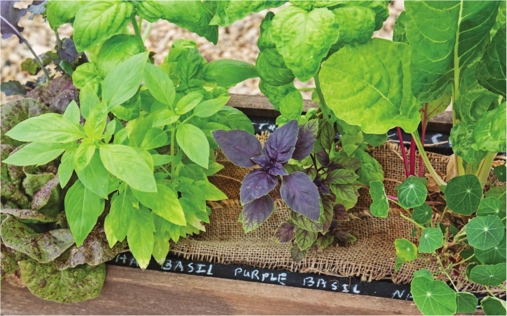
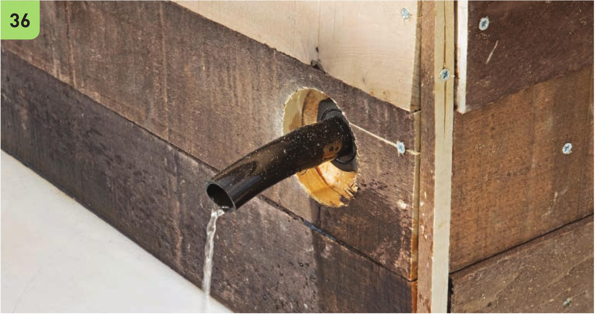

36 Th is garden does not use a substrate that has an initial fertilizer charge, so all nutrients will need to be provided through water-soluble fertilizers during waterings. Watering with a hydroponic nutrient solution once a week is often sufficient to meet nutrient requirements of crops in this system. When adding water to this system, do not stop watering until the system is visibly draining. The burlap mulch in this wicking bed was added primarily for decoration, but in very warm climates it can help retain moisture in the growing bed. 68 DIY HYDROPONIC GARDENS

